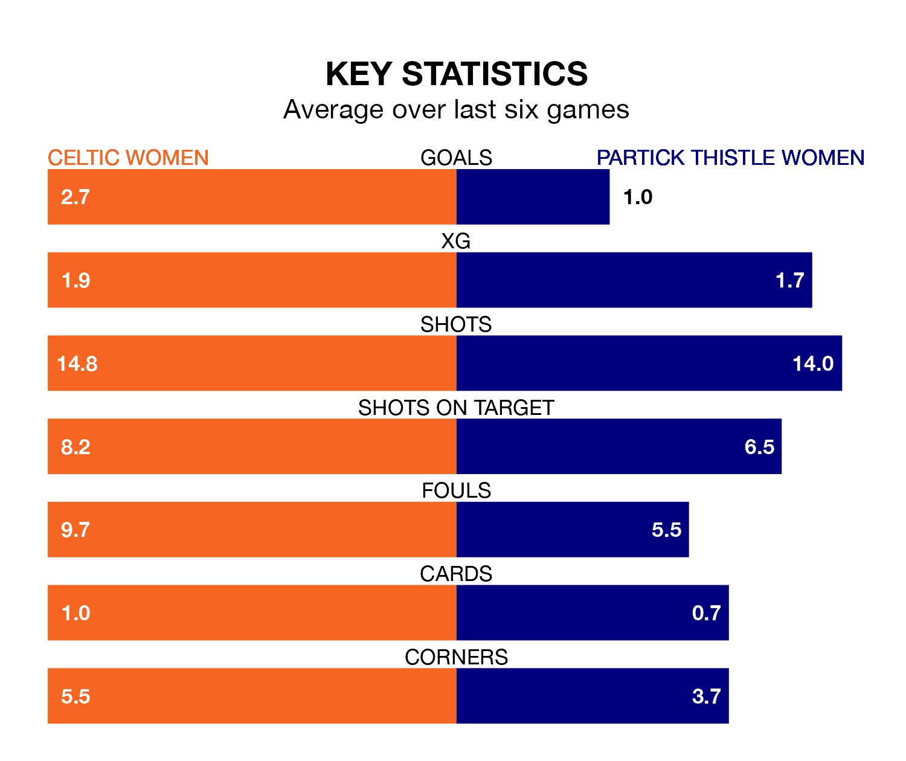

Partick Thistle Women face Celtic Women on Sunday seeking to protect their long unbeaten run in SWPL 1.
Thistle are unbeaten in five, with three wins and two draws, ahead of the 2pm kick-off.
They face a Celtic team who have won three and drawn one over the same number of games.
With 96 goals in 21 games so far this season, Celtic are the league's highest scorers with 4.6 goals per game. And they are conceding fewer than average, letting in 12 goals at a rate of 0.6 per game.
Partick Thistle, meanwhile, are below average scorers, with 1.6 goals per game, compared to a league average of 2.1. They have conceded 1.4 goals per game.
In Kelsey Daugherty, the home team can rely on one of the league's safest pair of hands. She has kept nine clean sheets in her 17 appearances this season, and no 'keeper has prevented the opposition scoring more often in SWPL 1.
In Thistle's net, Ava Easdon has six clean sheets in 10 games. She has conceded a goal every 118 minutes, 20% more often than the 139 minutes between goals for Daugherty.
Celtic are second in the table after 21 games, of which they have won 17 and drawn two, earning 53 points.
The visitors are four places behind Celtic in sixth, with 12 wins and two draws putting them on 38 points.
In the last 10 years, Celtic and Partick Thistle have played each other on 10 occasions. Celtic won all of them.
On average, Celtic scored 3.7 goals and Thistle 0.1 in those matches.
Their last meeting was on October 15, when Celtic won 3-0 away.
Celtic's last match was on February 18, a 1-1 draw against Rangers Women, with Natasha Jane Flint getting the goal for Celtic.
Partick Thistle drew 1-1 with Hibernian Women last time out, also on February 18, with Rachel Donaldson on the scoresheet.
Updated: 10:08 (UTC), 23/02/24